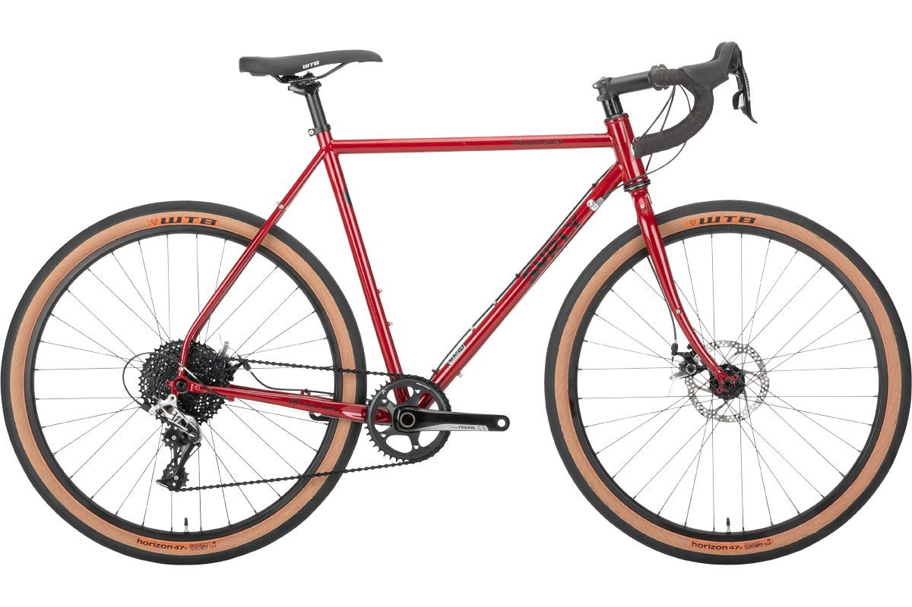
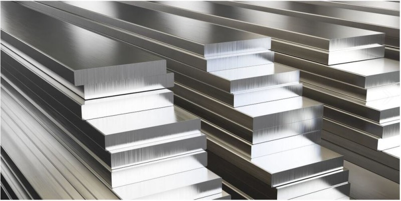
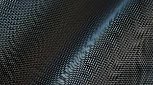
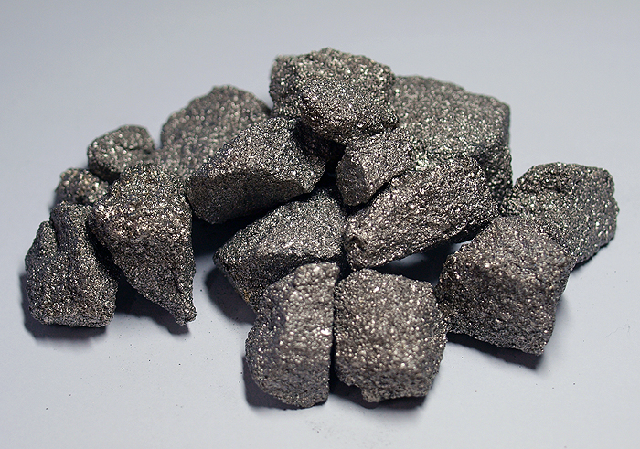

가장 기본이 되는 소재로 보통 철로 알려져있다.
하이텐 스틸은 고장력강이라고 해서 보통 강보다 인장강도가 강한 강을 의미한다.
자전거프레임을 대량생산하기의 최적의 조건을 갖추고 있는 소재이다.
성형도 쉽고 강도도 좋아 제작이 간단하다.
가격역시 가장 저렴하지만 무게가 무겁고 부식에 취약한 단점이 있다.

크로몰리브덴
일명 크로몰리라고 불리우는 이소재는 크롬-몰리브덴강이라고 부르는 특수강의 일종이다.
하이텐 스틸에 비해 인장강도와 항복점이 높다보니 더얇은 프레임을 만들수가 있고 탄성도 더 좋아지게 된다.

알루미늄 합금
알루미늄의 소재가 저렴해지고 기술이 발달되면서 보급화되어 저렴한 가격의 자전거에도 사용되는 알루미늄은 가공이 쉽고 무게도 가볍다.
또한 부식에 강해 녹이 잘 슬지 않는다.

탄소섬유
탄소섬유를 여러겹 쌓아서 열성형으로 만들어지는 카본은 무게가 상당히 가볍고 탄성과 강도도 뛰어나다.
제작의 특성상 부위별 두께를 조정해 강도와 경량화 둘다가능 하나 대량생산이 힘들고 가격이 비싸다는 단점이 있다.

티타늄
티타늄은 강도와 탄성이 뛰어나고 부식에 강해 노도잘 슬지 않으며 카본처럼 수명이 짧지 않다.
가장큰 단점으로는 가공이 힘들어 가격이 높다.